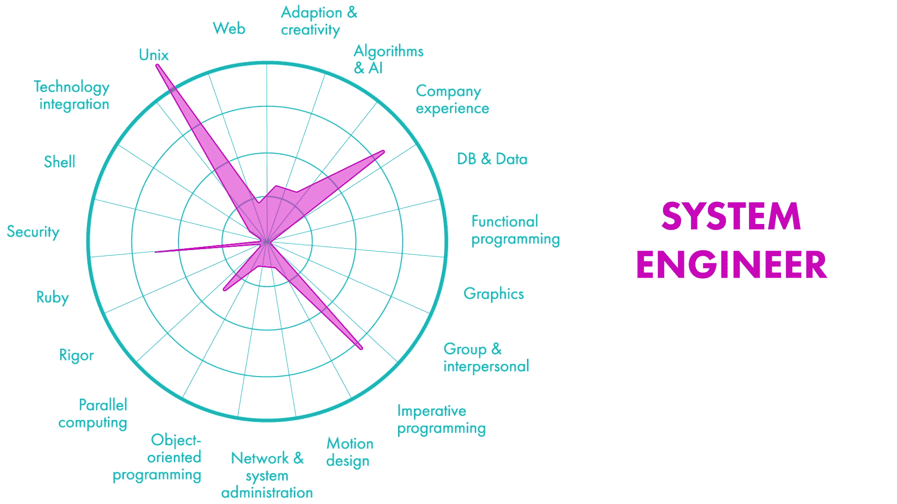

Mengenal Pemograman Ruby
Posted on Sun 21 March 2021 in programming
[TOC]
Apa itu Ruby?
Ruby adalah bahasa pemograman open source dinamis, mudah dimengerti dan produktif. Sintaks Ruby elegan, natural, mudah dibaca dan ditulis. Ruby dibuat pertama kali oleh seorang programmer Jepang bernama Yukihiro Matsumoto dari tahun 1993 dengan rilis versi alfa pertama pada Desember 1994. Rubyist adalah sebutan bagi programmer yang menggunakan bahasa pemograman Ruby.
Mengapa kita perlu belajar Pemograman Ruby
Ruby, meski tidak sepopular Python, masih menduduki 10 besar bahasa pemograman tahun 2014-2020 versi Github octoverse. Dari sisi pembuatan website, pemograman Ruby dengan Ruby on Rails (RoR) memiliki kontributor yang paling banyak, yakni lebih dari 4000, sedangkan Python dengan Django-nya berada di urutan ke dua dengan jumlah kontributor setengah dari RoR baca di sini. Beberapa website popular yang menggunakan RoR diantaranya Github, AirBnB dan Bukalapak. Beberapa lembaga kursus siap kerja juga memasukan Ruby sebagai kurikulumnya seperti Microverse dan 42 Wolfsburg.

Cara Instalasi Ruby
cara instal Ruby dengan melalui terminal di Ubuntu cukup mudah, yakni
sudo apt update
sudo apt install ruby-full
Seteleah selesai, cek instalasi versi ruby dengan menggunakan perintah
ruby --version
Mengenal variable dan tipe data pada Ruby
Ruby memiliki enam tipe data dasar yakni: Integer, Float, TrueClass, FalseClass, String, Symbol. Dan dua tipe data koleksi: Array dan Hash. Untuk memulai belajar Ruby, aku menggunakan Visual Studio Code karena bisa menggunakan teks editor dan terminal dalam satu jendela sekaligus. Atom dan Sublime juga bisa menggunakan terminal hanya harus instal plugin tambahan.
Berikut ini contoh syntax untuk mendeklarasikan nilai variable untuk tipe data Integer, Float dan String.
angka = 35
desimal = 3.5
kata = "permata merah"
Tampilkan variable yang telah dideklarasikan dengan menggunakan syntax puts atau print
puts angka
print desimal
Untuk menampilkan tipe data yang digunakan adalah dengan cara menambahkan .class setelah variable seperti pada perintah berikut
puts kata.class
puts angka.class
Operasi angka dan string pada Ruby
Selain operasi matematika dasar +, -, *, /, Ruby juga mengenal modulus % dan exponent **
puts 5%2
puts 5**2
Metode pada Integer dan String
puts 21.even?
puts 17.to_f
selain .even? dan .to_f, metode lainnya dapat dilihat dengan menggunakan perintah .methods. Contohnya dapat dilihat dalam syntax berikut
puts kata.methods
puts 17.methods
Komparasi digunakan untuk membandingkan dua nilai atau lebih. Syntax komparasi di pemograman Ruby dapat dilihat dalam gambar berikut.
puts 5 < 2
puts 3 == 3
puts 3 <= 3
puts 1 != 2
puts 3 > 1 && 4 < 2
puts 3 > 1 || 4 < 2
puts 10.eql?(10.0) # komparasi tipe data
Komparasi juga dapat digunakan pada string
puts "hai" == "halo"
puts "hai" != "halo"
puts "a" > "A"
puts " " > "a"
String Concatenation dan Interpolation adalah cara untuk menggabungkan String. Contoh pemograman dapat dilihat pada sintax berikut
fname = "Sasuke"
lname = "Uchiha"
puts "nama lengkapnya adalah " + fname + " " + lname #string concatenation
puts "namanya adalah #{fname}, sedangkan marganya #{lname}" #string Interpolation
String escaping digunakan bilamana aku ingin menulis tanda petik dalam string.
puts "I'm Flash \"the runner\""
Menerima input
Untuk dapat menerima input dari user, kita dapat menggunakan syntax gets.chomp. Contoh pemakaian syntax tersebut dapat dilihat pada kode Berikut
### Program Sederhana ###
#### Selamat Datang ####
puts "masukan nama depan anda?"
nama_depan = gets.chomp
puts "masukan nama belakang anda?"
nama_belakang = gets.chomp
karakter_nama = nama_depan.length + nama_belakang.length
puts "selamat datang #{nama_depan} #{nama_belakang}, jumlah karakter nama anda #{karakter_nama} huruf"
simpan kode tersebut dalam file bernama welcome.rb dan jalankan. Contoh hasil pemograman dapat dilihat dalam syntax Berikut
~$ ruby welcome.rb
masukan nama depan anda?
ananto
masukan nama belakang anda?
wicaksono
selamat datang ananto wicaksono, jumlah karakter nama anda 15 huruf
membuat method
Metodh atau fungsi dalam Python dapat dibuat sendiri dengan menggunakan syntax def dan ditutup oleh end. Contoh pemograman membuat metode dapat dilihat dalam kode berikut ini
def multiply(first_num, second_num)
first_num.to_f * second_num.to_f # in ruby, last statement return automatically
end
def divide(first_num, second_num)
first_num.to_f / second_num.to_f
end
def subtract(first_num, second_num)
first_num.to_f - second_num.to_f
end
def add(first_num, second_num)
first_num + second_num
end
def mod(first_num, second_num)
first_num % second_num
end
Sekarang mari kita tes metode multiply, divide, subtract, add, dan mod
puts multiply(4,5)
puts divide(4,5)
puts add(4,5)
puts subtract(4,5)
puts mod(4,5)
Percabangan (Branching)
Percabangan atau branching umumnya menggunakan statement if, elsif, dan else. Untuk lebih jelasnya, perhatikan contoh program berikut ini.
puts "siapa nama kamu?"
nama = gets.chomp
puts "berapa umur kamu?"
umur = gets.chomp
puts "berapa tinggi badan kamu dalam cm?"
tinggi = gets.chomp
if umur.to_i >= 17 && umur.to_i <= 60 && tinggi.to_i >= 150
puts "selamat kakak #{nama}, kamu sudah berhak bikin SIM"
elsif umur.to_i < 17 || tinggi.to_i < 150
puts "maaf kak #{nama} belum bisa bikin SIM karena umur kakak belum 17 tahun atau tinggi tidak mencapai 150 cm"
else
puts "maaf umur kakak #{nama} sudah melebihi ambang batas bikin SIM"
end
Pada program tersebut, user disuruh mengisi nama, umur dan tinggi badan. Jika umur dan tinggi badan sesuai yang disyaratkan maka program tersebut akan memberikan ucapan selamat. Jika tidak, maka program akan memberi peringatan pesyaratan mana saja yang belum dipenuhi oleh user.
Referensi
Kini tersedia banyak website yang memberikan materi-materi untuk belajar pemograman Ruby secara gratis diantaranya adalah:
Sekian dulu artikel ku tentang pengenalan pemograman Ruby. Jika masih ada waktu dan umur, insya Allah tulisan ini akan saya update kembali sesuai perkembangan zaman.
Artikel ini ditulis selama masa karantina di Wisma Atlet Pandemangan